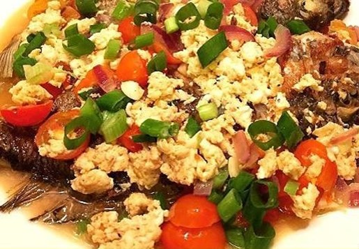

Fish Sarciado
What is Fish Sarciado?
Fried fish is simmered in a sauce that is usually composed of tomatoes and onions; some seasonings are also added to enhance the flavor.
Ingredients
1 kilo fish
1 teaspoon sal
1 tablespoon lemon juice
1/2 cup vegetable or corn o
2 tablespoons minced garlic
1/4 cup minced onion
1 cup minced tomatoes
1/2 teaspoon freshly ground pepper
1/4 cup water
1 teaspoon patis (fish sauce) or salt
1/4 cup chopped scallions
Instructions / How to Cook
1. Season the fish with salt and lemon juice. Marinate for 30 minutes.
2. In a large skillet, using half the oil, fry the fillets until they are light brown on both sides.
3. Drain on absorbent paper towel.
4. In another large skillet, saute garlic in remaining oil until light brown, then onion until transparent and tomatoes until soft.
5. Add pepper, water and patis or salt.
6. Simmer until a saucy consistency is achieved.
7. Add the fried fish to the sauce.
8. Cover the skillet and cook for 2 minutes, turning the fillets once.
9. Serve hot, garnished with scallions.